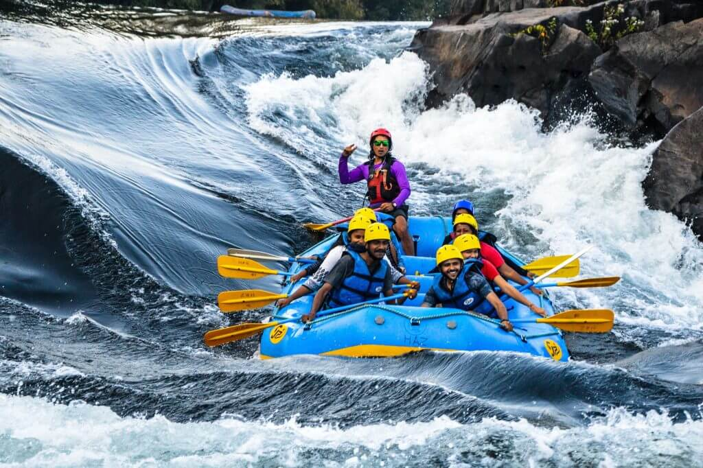
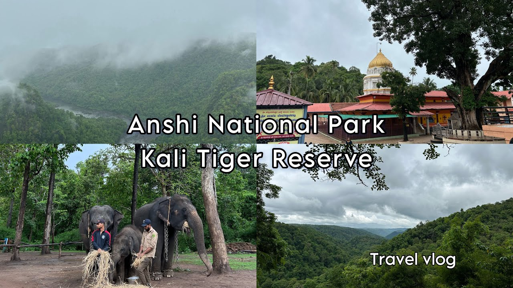
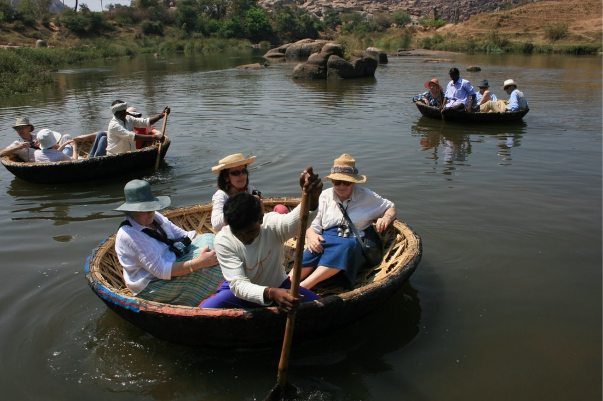
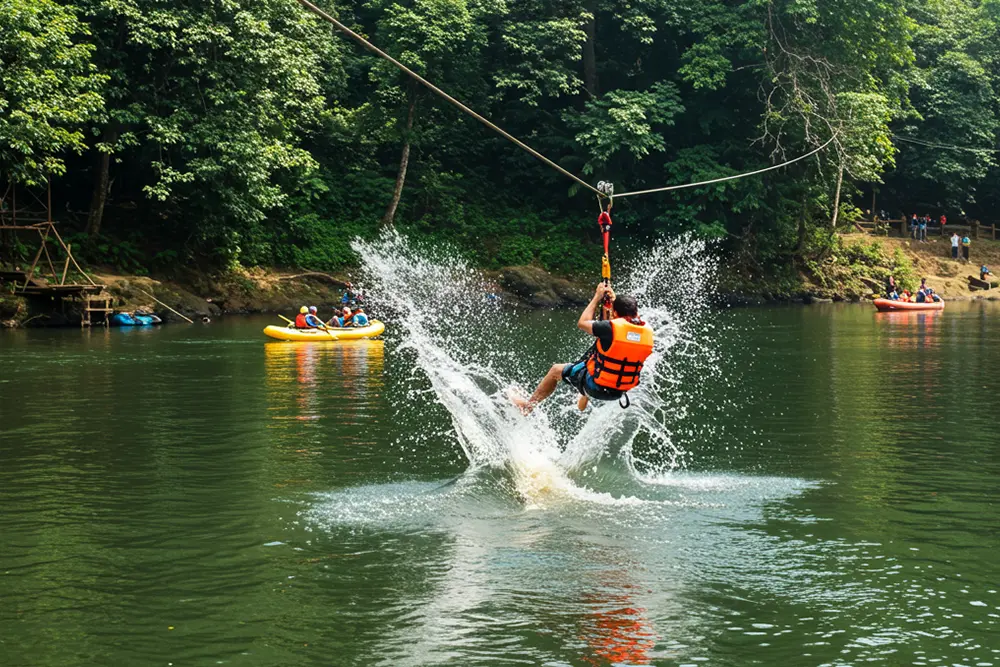

The Frontier of Raging Rapids & Canopy Wilds
Set along the rocky banks of the surging Kali River in the Western Ghats of Karnataka, Dandeli is a powerhouse for dense jungle exploration. Covered by massive deciduous forests and protected wildlife reserves, this subtropical ecosystem acts as a primary habitat for rare black panthers and hornbills. It offers a premier southern arena for combining fierce river tracking with deep forest tactical survival.
Dandeli carries a heavy, hum-filled jungle energy. The air is thick, humid, and constantly alive with the echoing cries of forest canopies and the deep rush of river channels. It is a playground designed for authentic wilderness living—where travelers spend their mornings tackling white-water rapids and their nights sitting around deep back-country bonfires under a dense canopy of ancient trees.

Battle the fierce, rushing rapids of the Kali River. Navigate challenging sudden drops and technical rocky sections like the famous 'Stanley’s Backwater' stretch.

Board high-clearance open 4x4 vehicles to penetrate deep into dense tiger reserve zones. Track elusive predators, barking deer, and giant Malabar squirrels through heavy brush.

Test your blade balance navigating solo river kayaks through narrow rock rapids, or board traditional round woven coracles to float down calm, crocodile-inhabited inlets.

Launch yourself off massive wooden platforms built over high jungle ridges. Fly at high speeds directly across roaring river channels into dense tree canopies.